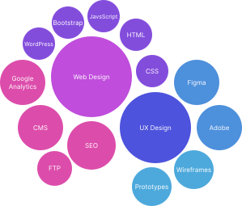

Terris Ng

Honored Bachelor of Arts student with several working experiences in the past. Currently in fourth year studying CCIT (Communication, Culture, Information and Technology) at the University of Toronto while also persuading my certificate in Digital Communication at the Sheridan College.
Terris Ng
terrisng@gmail.com
+1 647-XXX-XXXX
Qualification Highlights
- Multimedia communication skills – HTML, CSS, Bootstrap, JavaScript, WordPress, Figma, & Microsoft suite
- Foundational understanding in SEO, CMS, File Transfer Protocol, & Google Analytics
- Experiences in UI/UX design – Creating wireframes, graphical design work, low & high-fidelity prototype
- Solid background in public relation, communication, and customer service
- Adaptable, multilingual in global experiences. Comfortable communicating even in unfamiliar surroundings.
- Languages: Fluent in English, Cantonese, Mandarin.
- Proven teamwork, communication skills based on summer internships and part-time work

Education
University of Toronto
- Honours Bachelor of Arts, Double Major in Communication, Culture, Information & Technology and Criminology
- Relevant Course Work: User Experience Analysis (Qualitative), User Experience Design (Quantitative)
Sheridan College
- Certificate in Digital Communication
- Relevant Course Work: Advanced Web Design, Information Visualization
Relevant Professional Experience
Junior Web Designer, Sidkey & Co
- Planned and designed a new landing page for the company
- Demonstrated strong teamwork skills via collaborating with co-workers and supervisors
- Edited and improved customer’s website according to their requests
May 2021 - Aug 2021
Document Verification and Collection Staff, Intercruises, Hong Kong
- Gathered, organized, and categorized passports according to countries
- Provided customer services – guiding ways, handling complains
- Demonstrated strong communication skills via cooperation with crew members
July 2019 - Aug 2019
Online Platform Promoter, Hong Kong Trade Development Council
- Set up and arranged displays to attract the attention of delegates
- Scheduled photo-taking appointments for exhibitors while being a part of photo-team of 6
- Demonstrated strong public relations skills by supporting and informing investors from all over the world in a food & beverage trade show
Aug 2018 - Aug 2018
Postal Clerk, Canada Post
- Innovated a better way to organize for receiving, categorizing, and storing of mails & parcels
- Implemented policy and procedures in eliminating the chances of missing parcels
- Responsible for large amounts of cash, e-money transfer, stamps, and postage meter
- Demonstrated strong data recording skills while handling a large amount of data,impatient customers, and long line ups at peak time
Oct 2016 - Jan 2017
Relevant Volunteer Experience
Teaching Assistant, Bayview Secondary School
- Responsible for organizing and preparing class materials by photocopying & scanning documents
- Supported students in enhancing their written and verbal communication skills by coaching and encouraging
- Helped keep the order of the class when the teacher was away or busy with other students
- Escorted and monitored students during breaks to ensure their safety
Oct 2015 - April 2016
Interests
- Member, ICCIT Council, 2019-2022
- Sports: Badminton and table tennis
- Learning Japanese culture, traveling